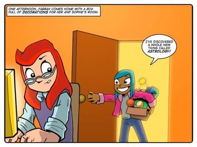

Story: The Astrologer
Theme: Thinking through the implications of your thinking.
Synopsis
Farrah has discovered astrology and she is charmed by the crystals and other astrological trinkets she has found. She thinks they're pretty. But Sophie thinks they're ugly and the girls get into a fight that ends when Farrah storms out. Farrah is only really offended that Sophie has insulted her aesthetic sensibilities. Although Farrah is not really interested in the mystical thinking behind astrology, Sophie resolves to show Farrah the implications of thinking mystically. She does this by trying a little reverse psychology. She pretends that she too is interested in astrology and other mystical pursuits. When Farrah stands back and watches Sophie in action, she naturally sees the folly behind tea leaf reading, astrology and crystal balls.
This story focuses on recognising the logical consequences of accepting an idea. When Farrah is in an objective position she is easily able to identify the implausible leaps of logic that Sophie must make to accept the principles of tea leaf reading and such.
Activity
No activity. All available lesson time reserved for eToys.
eToys free-form project.
Learners are free to create any eToys project.